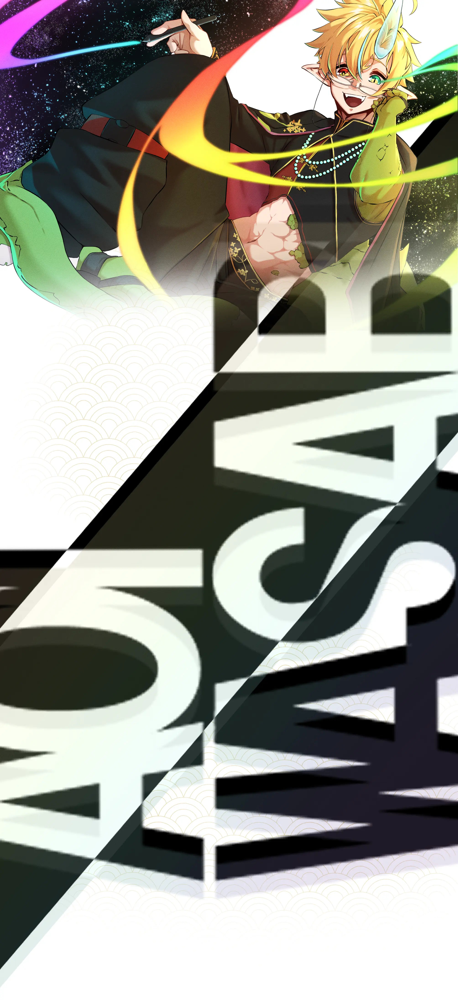

ABOUT
葵山葵。（あおいわさび。） キャラクターイラストを中心に活動するイラストレーターです。 キャラクターの魅力や個性を大切にしながら、 Vtuber向けイラスト、キービジュアル、キャラクターデザインなどを制作しています。 個人様、企業様を問わず、イラスト制作のご依頼を受け付けています。 ご依頼に関してはcommissionのページをご覧ください。 ご連絡に関してはcontactのページですが、光る玉に触れて見ると何か分かるかもしれません。

葵山葵。（あおいわさび。） キャラクターイラストを中心に活動するイラストレーターです。 キャラクターの魅力や個性を大切にしながら、 Vtuber向けイラスト、キービジュアル、キャラクターデザインなどを制作しています。 個人様、企業様を問わず、イラスト制作のご依頼を受け付けています。 ご依頼に関してはcommissionのページをご覧ください。 ご連絡に関してはcontactのページですが、光る玉に触れて見ると何か分かるかもしれません。